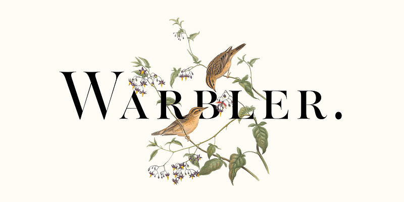
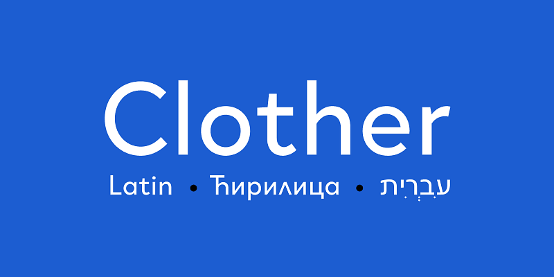
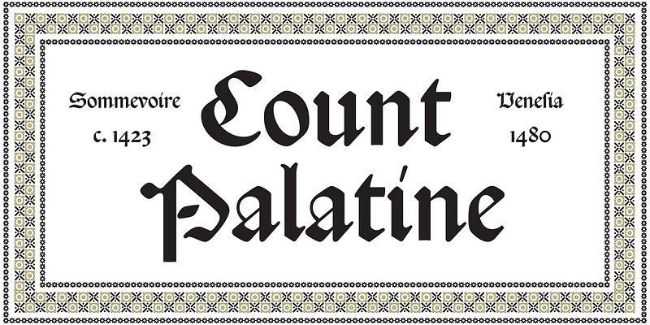
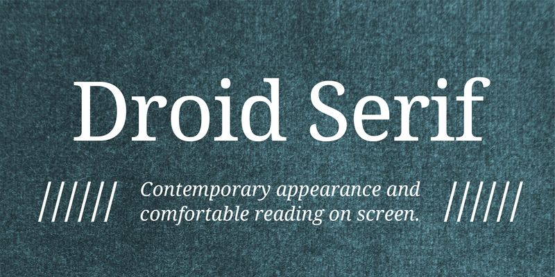

Understanding Different Types of Fonts
Typography plays an important role in how we experience written content. The style of a font can influence readability, tone, and emotional response. This article explores four font types: serif, sans serif, blackletter, and open source typefaces.
Serif Fonts: Readability
Serif fonts are characterized by small decorative strokes, or “serifs,” at the ends of letters. These details give the text a classic appearance, often associated with print media like books and newspapers.
Warbler blends traditional serif elements with contemporary design, making it readable and elegant.
Click here to Download Warbler from Adobe Fonts

Sans Serif Fonts: Clean and Modern
Sans serif fonts do not include the small finishing strokes found in serif fonts. This gives them a clean, minimal, and modern look.
Clother is a sans serif typeface, ideal for digital screens where clarity plays an important role.
Click here to Download Clother from Adobe Fonts

Blackletter Fonts: Historical
Blackletter fonts are highly decorative and rooted in medieval calligraphy. They are known for their dramatic and dense appearance.
Rotunda Veneta is a softer variation of this historic style.
Click here to Download Rotunda Veneta from Adobe Fonts

Open Source Typefaces: Accessible
Open source typefaces are freely available for use and modification, making them ideal for designers and developers.
Droid Serif is designed for comfortable reading on screens while maintaining a classic serif feel.
Click here to Download Droid Serif from Adobe Fonts

Conclusion
Each font type serves a unique purpose. Serif fonts bring tradition, sans serif fonts offer clarity, blackletter styles provide historical flair, and open source fonts ensure accessibility and flexibility.